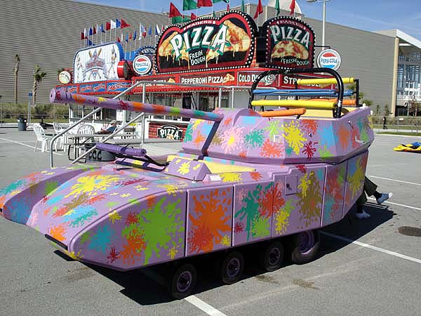

Нико Беллик
24 января 2015
его львиная морда настолько мерзко арёт при падении что баже заглушает звуки взрывов при падении с высоты
менты чихать хотели на пончики и на натёртости в интим. местах, они готовы два раза обсириться, лижбы догнать бедолагу бомжыка из молдовы
за то что он просто защищался СУКА!
льётся из уст его мат сапожный, который от папы ему достался в дар по наследству от вонючего прибалта, когда он рыбу тухлую ловил и льва кормил
эх алигория загнутая слишком
ржавый звук без покрышек по дороге у него в голове, поэтому едит он по тротуару не спеша, наслаждаясь чужими страданиями и муками, кровавый гонщик, красит тротуар в цвет войны
огонь из под колёс как следствие крутого тюнинга и тройного бензобака прибавят артистизма и харизмы нашему льву убийцы
наш герой скупость слов перелил в мучения людей
но видимо плоть бомжа на столько провоняла, что копы вмиг его опять найдут, и оружие тогда придётся им отдать, чтоб по зубам не схлопотать опять!
продолжит он своё дело в больнице, ведь там укроет он себя вуалью ночной и копы с вертолёта его не засеч не смогут добъёт он там бродяг - своих друзей! и прочих шлюх и потаскух ведь он король лев!
мотоцикл моей мячты
12 марта 2014
и пусть даже в нём не 1000 кубов

Участники соревнований дохнут-с!
8 февраля 2014
Также лингвистическое расследование показало, что “дохнутс” (doughnuts) - вполне допустимое написание для пончиков. Просто устаревшее. Приносим организаторам Олимпийских игр свои извинения!
Тачки
4 февраля 2014
{kind=link}
{kind=link}
Тизер Place under the sun
19 января 2014
Сэкс, наркотики, оружие, деньги, машины, кровь, предательство, насилие, наёмники, безумие, риск, власть!!! Для любителей криминального мира, так хорошо замаскированный пальмами, прохладным океаном, красивыми девочками и жарким Австралийским солнцем.
Drunking muttsnuts
7 июня 2013
Закусочная Dunkin’ Donuts объявила 7-е июня “всемирным днем пончика” в рамках своей акции. То, что существует такой праздник похоже на пиздеж. Правда то, что есть американский “национальный день пончика”, отмечаемый в первую июньскую пятницу.
{kind=link}
Всех с наступающим 9-м мая!
24 апреля 2013
С Днем Победы, друзья!

Так скать долбит
25 февраля 2013
p0n4ik (22:24:00 4/04/2011)
тебя вот когда в рот ебут, ть смотришь на того кто тебя ебёт ?
p0n4ik (22:24:10 4/04/2011)
так сказать долбит
p0n4ik (22:24:16 4/04/2011)
🙂